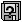
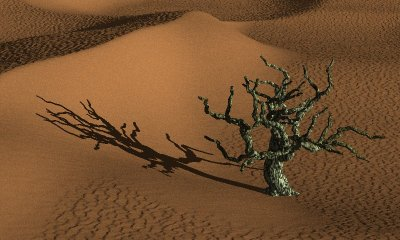
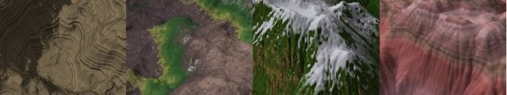
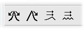
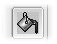
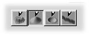
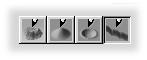
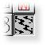

Geomorph
- Quoi de neuf - Archive
Que se passe-t-il avec
Geomorph? (30 juin 2006)
La version 0.31 (25
novembre 2005)
Mise à jour
concernant la version 0.31 (28 novembre)
Les
nouveautés
de la version 0.30 (31 octobre 2005)
Correctifs du 2
février 2005
Les nouveautés de
la version
0.22 (30 octobre 2004)
Les nouveautés de la
version 0.21
(16 août 2004)
Les nouveautés de la
version
0.20 (7 mai 2004)
Les nouveautés de la version
0.12 (16
novembre 2003)
Remplacement
d'un fichier en erreur, desert.pov (30 novembre 2003)
Que se passe-t-il avec
Geomorph? (30 juin 2006)
Geomorph n'est pas mort, mais les mises à jour du logiciel ont
tendance à s'espacer, pour des raisons aussi bonnes que
triviales (le travail, la famille...). Le site a
aussi été négligé, je m'en excuse, en
particulier auprès de ceux dont je devais publier les travaux
dans la Galerie.
La version 0.40 proposera un outil pour créer des
réseaux de craquelures, parmi quelques autres ajouts.
Peut-être serai-je en mesure d'y inclure un
"Explorateur de Fourier". La plomberie est faite, cependant l'interface
représente un défi.
Il y a aussi quelques autres nouvelles d'intérêt:
- Un portage de Geomorph sur FreeBSD est maintenant disponible
à http://www.freshports.org/graphics/geomorph. Mes meilleurs remerciements à
Dmitry Marakasov qui l'a converti.
- La Galerie a
été mise à jour avec des images très
intéressantes de Marc Carson, Jaime Vives Piqueres et
Simon Donike.
- Le fichier de messages
allemand de la version 0,31 n'affiche pas correctement les
caractères spéciaux de cette langue (ß,
ü...), en raison d'une double conversion UTF-8.
- Si vous utilisez le
paquetage binaire, le fichier de messages correctement compilés de.gmo se trouve ici. Connectez-vous comme "root" et
copiez-le de cette façon, dans une console:
cp -fv po/de.gmo
/usr/local/share/locale/de/LC_MESSAGES/geomorph.mo
- Si vous utilisez le
paquetage source, la méthode précédente
fonctionne. Vous pouvez aussi recompiler le fichier des messages source
corrigé de.po. Copiez ce fichier dans
~/geomorph-0.31/po, recompilez et réinstallez.
J'avais aussi oublié de donner un lien vers un texte qui expose
la philosophie de développement de Geomorph ainsi que les
possiblités de contribution, écrit en septembre 2005. Le voici donc.
Vous devriez avoir d'autres nouvelles de Geomorph au début de
l'automne, souhaitons-le!
Patrice St-Gelais
La version 0.31 (25
novembre 2005)
La version 0.31 corrige les problèmes suivants:
- Certains utilisateurs avec une carte Nvidia et le pilote
propriétaire de Nvidia ne pouvaient pas afficher
l'aperçu, d'aucune façon. La version 0.31 utilise la
librairie GtkGLExt library plutôt que GtkGLArea, ce qui corrige
le problème. Mes remerciements à Vincent Le Prince pour
avoir testé ce changement.
- Dans la "Chaudière de remplissage":
- L'option "Soustraire" n'entraîne plus l'arrêt de
Geomorph par erreur de
segmentation.
- Le remplissage de 10 zones et plus avec l'option "Ajout" (ou la
soustraction de 10 zones et plus) n'entraîne plus d'arrêt
de l'application.
- Les scripts d'installation des nouveaux utilisateurs ont
été corrigés. Il y a deux façons
d'installer un utilisateur: soit à partir de l'archive
décompressée, soit au premier lancement de Geomorph. La
seconde méthode n'était pas fonctionnelle à cause
d'une faute de frappe. Par ailleurs, les scripts ont été
modifiés pour ne plus utiliser les extensions GNU de "sed", qui
ne fonctionnent pas sous tous les systèmes.
- Il est maintenant possible de cloner (  ) un nouveau document non encore
enregistré, sans entraîner d'erreur. Geomorph demande
d'enregistrer le document.
- L'écriture de commentaires dans le fichier geomorphrc se
fait maintenant dans le code de caractères ("locale") courant,
plutôt que dans le format UTF-8.
Aucune nouvelle fonctionnalité n'est ajoutée.
La page d'installation et la FAQ ont été mises à jour.
Si vous préférez compiler Geomorph, notez que ligtkglext
et libgtkglext-devel font maintenant partie des dépendances, en
remplacement de libgtkglarea et libgtkglarea-devel. Si vous installez
le paquetage binaire, vous n'avez pas à vous en soucier, parce
qu'il inclut cette librairie ("liée statiquement").
L'utilisation de l'accélération matérielle pour
OpenGL ("direct rendering" - DRI) peut produire des instabilités
quand plusieurs documents sont fermés et ouverts en succession,
en plus des problèmes de mémoire déjà
décrits dans la FAQ. Contrairement
à la version 0.30, la
version 0.31 permet de choisir si l'aperçu de Geomorph est
accéléré ou non. Par défaut,
l'accélération matérielle dans Geomorph 0.31 est
inactive, même si elle est activée pour d'autres
logiciels. SVP consultez cette section de
la FAQ si vous
tenez à la réactiver.
Mise à jour
concernant la version 0.31 (28 novembre)
Le paquetage source (pas le binaire) contient une copie involontaire du
fichier d'options "geomorphrc". Elle est localisée à la
racine,
~/geomorph-0.31/. Si vous essayez d'exécuter Geomorph dans ce
répertoire, à partir de la console, ce fichier sera lu
plutôt que le vôtre, qui se trouve normalement dans
~/geomorph/. Si soudainement votre répertoire par défaut
est
/home/patrice/geomorph, c'est ce qui est arrivé! Cela n'arrivera
pas si vous démarrez Geomorph d'un autre répertoire, par
exemple en cliquant sur l'icône de votre bureau. Si vous
conservez le répertoire geomorph-0.31, je suggère
d'effacer le fichier pour éviter des erreurs dans le futur.
Merci à Cyril Brûlebois pour avoir soumis le
problème.
Les
nouveautés de la version 0.30 (31 octobre 2005)
Une nouvelle version de Geomorph est enfin disponible, après un
an!
La migration vers les librairies GTK2 explique la majeure partie des
efforts. Elle n'a pas
d'impact immédiat sur les fonctionnalités et
l'utilisation de Geomorph. C'est un investissement à long terme,
pour éviter la désuétude.
La version 0.30 propose de nombreuses
améliorations.
En particulier, si vous aimez les déserts et les rivages
maritimes,
vous pouvez dorénavant utiliser Geomorph pour
générer
des
dunes et des vaguelettes.

Dunes et vaguelettes réalisées avec Geomorph
Plusieurs optimisations devraient dorénavant
accélérer le
dessin et permettre d'éditer plus facilement des images de
1024x1024 et plus.
La documentation a été enrichie d'un index des outils et
d'une section sur Povray, qui
explore notamment l'art
des
textures.

Des textures
Povray offertes avec Geomorph
Les nouvelles sections contiennent un grand nombre d'images, parce
qu'il est plus facile de comprendre par l'exemple. Le chargement est un
peu long sur une ligne
56k, désolé! La documentation est maintenant
distribuée séparément de l'application, sous une
licence
Common Creative.
Lors de la création d'un répertoire d'utilisateur, les
scènes et les textures Povray installées sont
désormais plus nombreuses, et plusieurs d'entre elles ont
été améliorées lors de la rédaction
de la section sur Povray.
La galerie
a aussi
été enrichie. C'est principalement en réalisant
les paysages publiés dans cette galerie et dans les tutoriels
que les nouvelles fonctionnalités de Geomorph sont
conçues et que le logiciel est testé. La galerie propose
des liens vers certaines des scènes Povray et des images de
relief utilisées.
Voici, plus en détail, les changements apportés:
1. Les nouvelles fonctionnalités

Le
nouvel index des outils montre un aperçu des
résultats et donne des conseils d'utilisation, à
défaut d'une documentation détaillée.
- Une nouvelle plume de "remplissage", qui permet de
remplir des cavités jusqu'à une hauteur choisie, avec un
niveau variable de bruit.
- Un
nouveau bouton qui arrête le dernier rendu
Povray, à la suggestion de Simon Donike, le contributeur de la
version allemande.
- Un dialogue de fermeture, qui montre tous les documents non
encore sauvegardés - très pratique pour ceux qui empilent
un grand nombre de documents en explorant Geomorph!
2. Les principaux correctifs et améliorations
- Le dessin est dorénavant plus rapide. Le principal facteur
de ralentissement était la mise à jour de
l'aperçu. Maintenant, l'aperçu est mis à jour
à une résolution réduite lors du trait de plume,
et à la pleine résolution choisie au
relâchement du bouton de souris.
- Plusieurs dialogues ont été optimisés de
façon similaire. Par exemple, le
déplacement horizontal ou vertical est répercuté
dans l'aperçu lors du relâchement du curseur de
l'échelle déplacé par la souris.
- Une autre technique d'optimisation a été
généralisée, lorsque c'était pertinent: la
plupart des échelles numériques offrent dorénavant
des boutons pour augmenter ou diminuer le paramètre sans avoir
à déplacer le curseur de l'échelle. Avec de
grandes images, il peut être difficile de glisser le curseur
pendant que Geomorph travaille à rafraîchir l'affichage du
relief ou de l'aperçu.
- La nomenclature des fichiers de sortie Povray a été
changée. Dorénavant, le nom de l'image de relief
précédé de _ est utilisé. Cela évite
d'écraser l'image de relief avec l'image de sortie PNG,
lorsqu'elles portent le même nom (ex. terrain.pov donnait
terrain.png en sortie... il ne fallait pas que le relief
d'entrée s'appelle terrain.png!). Le préfixe _ peut
être changé dans le fichier d'options.
- Les erreurs de mise à l'échelle des outils de
dessin ont été corrigées.
- L'érosion et les crêtes sont plus naturelles. Les
pentes sont découpées en hexagones plutôt qu'en
quadrilatères.
- Des contrôles de défilement ont été
ajoutés lorsque l'image est agrandie ("scroll"). Cela facilite
le dessin de fins détails.
- Dans l'outil "Ondes", la période 10 fonctionne
dorénavant. L'image est entièrement couverte avec une
demi-longueur d'onde. Cela permet de faire des gradients.
- Les modifications sont mieux gérées. L'acceptation
automatique, lors du changement de contexte (clic sur un nouvel outil
ou sur la fenêtre d'un autre document), fonctionne plus
systématiquement.
- Le fureteur par défaut lors d'une nouvelle installation
est maintenant Epiphany plutôt que Galeon. Netscape n'est plus un
choix. Les choix essayés dans l'ordre sont: Epiphany, Firefox,
Mozilla,
Konqueror, Galeon.
- Plusieurs erreurs de segmentation ont été
corrigées.
La FAQ
a été réécrite en grande partie. Quelques
nouveaux problèmes sont documentés, en particulier une
fuite importante de mémoire relative à
l'accélération matérielle de certaines cartes
vidéo.
Notez qu'il n'y a pas eu de version 0.23 officielle. J'ai choisi de la
renommer 0.30, parce que les changements sont significatifs.
Correctifs
du 2
février 2005
1. Le paquetage binaire de la version
0.22 est maintenant intègre
Le paquetage avait été
chargé de façon incomplète. Il se
décompressait avec une erreur. La version maintenant disponible
sur la page de
téléchargement est intègre. Merci à
Simon de m'avoir prévenu.
2. Problème à lancer
Povray à partir de Geomorph 0.22 sous Mandrake 10.1
En passant à Mandrake 10.1, j'ai
constaté que Povray ne s'exécutait plus. En
exécutant Geomorph à partir de la ligne de commande,
l'appel de Povray montre la liste d'options Povray suivie de
l'extension .pov! Il y a des chances que vous ayez aussi ce
problème avec des versions récentes d'autres
distributions. Si c'est le cas, allez sur la page de téléchargement et
chargez la version "b".
3. Geomorph 0.23 s'en vient
Je travaille sur la version 0.23,
même si le rythme est lent! Elle fonctionnera sous GTK+2. La
rapidité du dessin sera augmentée grâce à
une optimisation du rafraîchissement de l'aperçu OpenGL.
L'érosion par la pluie paraîtra plus naturelle.
J'espère aussi être en mesure d'offrir quelques nouvelles
fonctions intéressantes.
Salutations!
Patrice St-G.
Les
nouveautés de la version 0.22
La version 0.22 a été publiée le 30 octobre 2004.
Elle offre deux changements d'importance:
- Le crayon "failles" a été enrichi pour permettre la
création de crevasses et de fissures. Un tutoriel est
proposé.
- Le degré de séparation des crevasses peut
être contrôlé.
- L'acceptation de la crevasse, faille ou fissure est maintenant
implicite (automatique) par défaut, afin
d'accélérer le dessin de réseaux.
- Geomorph est maintenant traduit en allemand, grâce à
la contribution de Tim Schürmann, à qui j'adresse mes
meilleurs remerciements! Tim a insisté pour que je
précise que cette traduction est expérimentale, alors
j'invite les utilisateurs allemands à me transmettre leurs
correctifs, s'ils en ont!

Quelques problèmes ont aussi été corrigés:
- L'"antialiasing" avait été désactivé
par mégarde dans la rotation. Il est maintenant actif, et je
promets d'être plus attentif à l'avenir...
- Il n'y a plus d'erreur de segmentation lorsque la
dénivellation du crayon "failles" est activée avant que
la première ligne de contrôle ne soit tracée.
- Dans le crayon "failles", l'algorithme d'orientation de la
dénivellation était parfois pris en défaut. Pour
certaines orientations de la ligne de contrôle, il n'était
pas possible d'inverser la dénivellation, le même plan se
retrouvait toujours à l'altitude supérieure. C'est
corrigé.
- Certains messages "Remettre à 0" avaient été
remplacés par "Annuler". "Remettre à 0" a
été réintroduit. Ce problème ne touche que
la version française.
L'éclairage de la scène Povray simple_terrain.pov
a aussi été changé pour ressembler davantage
à l'aperçu OpenGL.
Les nouveautés de la
version 0.21
La version 0.21 a été publiée le 16 août
2004.
Cette version corrige le problème des messages et des titres mal
affichés dans les configurations autres que françaises ou
anglaises. Par exemple, "FILETXT" s'affichait dans le menu principal,
plutôt que "Fichier" ou "File". Elle devrait aussi être
compilable sur un plus grand nombre de distributions.
Aucune nouvelle fonctionnalité n'est offerte. Si vous utilisez
Geomorph 0.20 et que vous n'avez pas de problèmes avec vos
messages, vous n'avez probablement pas besoin d'installer cette mise
à jour.
Cependant, si vous désirez collaborer à Geomorph en le
traduisant dans votre langue, il vous faudra utiliser le nouveau
catalogue ".po" fourni avec cette version. C'est une invitation: si
vous désirez essayer, je serai très heureux de vous
envoyer des instructions détaillées et de vous supporter
:-).
Voici en détail les modifications apportées:
- Toutes les clés de messages (titres de boutons, messages
d'erreur, etc.) ont été converties en expressions
anglaises complètes, selon le standard de la librairie
d'internationalisation ("gettext"). Les clés sont
dorénavant l'équivalent des messages anglais. Ces
clés apparaîtront si votre localisation est autre que
l'anglais ou le français, ou si pour une raison
ou pour une autre la localisation ne fonctionne pas sur votre
système.
- Les scripts d'installation standard fournis (aclocal - automake)
et les scripts d'internationalisation fournis avec "gettext" ont
été réinitialisés avec une version plus
récente.
- Une option de librairie a été ajoutée pour
permettre la compilation sous SuSE 9.1 (libGLU).
- Trois programmes ont été modifiés pour
être compilables avec des versions plus anciennes du compilateur
gcc sans message fatal. Geomorph 0.20 n'était pas compilable
sous Mandrake 8.0, Slackware 8.1 et probablement d'autres distributions
de
la même époque, à cause de l'ordre de certaines
déclarations C.
- L'option "pause" a été ajoutée dans les
options par défaut de Povray, dans le fichier geomorphrc (+P),
de façon à ce que la fenêtre de rendu reste
affichée après l'exécution.
- La librairie "libgtkgl" est dorénavant incluse dans la
distribution binaire ("liée statiquement"), pour éviter
des démarches aux utilisateurs. Cette librairie fait partie du
paquetage "gtkglarea", qui n'est généralement pas
installé
par défaut dans les distributions courantes.
- Les raccourcis de bureau créés à
l'intallation pointent maintenant sur l'emplacement véritable de
l'icône de Geomorph, /usr/local/share/geomorph/GeoMorph.xpm. Cet
emplacement avait été rendu indépendant de la
version avec Geomorph 0.20, mais les raccourcis n'avaient pas
été mis à jour.
- La FAQ et les instructions d'installation ont été
mises à jour.
Merci à Tim Schürmann pour sa collaboration dans le
diagnostic des problèmes d'installation et les tests du nouveau
paquetage!
Les nouveautés de la
version 0.20
La version 0.20 a été publiée le 7
mai 2004.
Voici les améliorations les plus importantes :
 Un crayon continu gaussien est maintenant offert. La
grandeur, le niveau et l'effet (augmenter ou diminuer l'altitude,
rendre flou) peuvent être contrôlés, la pointe peut
être choisie, un aperçu est disponible, et il est possible
d'augmenter la qualité désirée en diminuant la
vitesse ou
vice versa. Le résultat n'a rien d'exceptionnel, je tenais
à ajouter l'outil parce que j'y voyais une utilité.
Croyez-moi, il n'est pas facile de développer un crayon continu
et vraiment lisse sur des images d'une profondeur de 16 bits. J'ai
commencé à y travailler il y a environ 1 an. La prochaine
étape sera d'ajouter des pointes "larges", pour dessiner des
routes avec leurs
fossés, par exemple. Pour l'instant, les pointes doivent
être
gaussiennes ou très aiguës, autrement le trait "plie" dans
les courbes.
 Un crayon pour dessiner des failles a
été ajouté. Il permet de dessiner une ligne de
contrôle
générant une faille fractale. Vous ajustez la ligne
de contrôle avec la souris et l'effet sur la faille est visible
immédiatement. Vous pouvez contrôler comment la faille
est divisée, la dénivellation, le lissage et même
ajouter des crevasses rudimentaires. Ce fut amusant à
développer,
et je crois que c'est pas mal "cool" à utiliser! Je propose un tutoriel.

L'outil "ondes" a été amélioré de
façon importante. "L'aliasing" est maintenant
contrôlé. Le paramètre de variation verticale
aléatoire fonctionne dorénavant, tout comme le bouton de
rafraîchissement de la racine aléatoire. La forme des
ondes a été améliorée sensiblement. Quand
il y a plus de 2 onglets, l'acceptation des changements ne modifie plus
leur ordre d'application. Globament, je dirais que
l'outil est "presque utilisable", tout dépendant de vos besoins.
Le principal inconvénient est que lorsque vous appliquez une
déformation latérale avec un angle qui n'est pas droit,
vous obtenez des côtés non continus (ce qui est normal),
mais qu'il n'existe pas d'outil permettant de rogner l'image et de
la mettre à l'échelle pour s'en débarrasser. Si
vous n'utilisez que des déformations verticales, ou appliquez un
filtre gaussien pour noircir les côtés après avoir
accepté la transformation "ondes", ce n'est pas un
problème.
La version 0.20 offre aussi plusieurs petites ou moyennes
améliorations, visant à rendre l'utilisation de Geomorph
plus agréable:
- Les changements de contexte sont maintenant mieux
contrôlés. Par exemple, lorsque vous éditez un
document et ouvrez ou créez un nouveau document avant d'accepter
les changements sur le document courant, ces changements sont
maintenant
acceptés automatiquement. Dans la version
précédente,
les changements étaient acceptés automatiquement
seulement
lorsque l'on cliquait sur un icône de la même barre de
menus.
Pour l'instant, la seule option est d'accepter automatiquement les
changements.
Les autres possibilités sont d'annuler les changements par
défaut (comme le fait Gimp), ou bien de demander. Un
paramètre dans le fichier d'options pourrait être
ajouté dans le futur pour choisir le comportement par
défaut, si quelqu'un le demande.
- Le crayon "relief" (fractal) offre dorénavant un
contrôle d'espacement. Les traits sont plus réguliers.
- L'érosion par l'eau fonctionne dorénavant
correctement avec les images qui ne s'"enroulent" pas.
- Lors de la rotation d'une image qui ne s'"enroule" pas, les coins
sont maintenant remplis en faisant "rebondir" l'image. Le
résultat est une image continue.
- En mode "dessin", la valeur des pixels sous le curseur de la
souris est maintenant affichée. De plus, lorsque l'affichage est
mis à l'échelle (25%, 50%... 200%, 400%), la position du
pointeur dans l'image est maintenant correctement affichée.
- Le crayon fractal "subdivision 2" est maintenant recalculé
à chaque point, comme "subdivision 1".
- Le style de certains icônes a été
uniformisé, notamment ceux de la barre de pinceaux.
- Il devrait être possible dorénavant d'installer
Geomorph dans un autre répertoire que celui par défaut
(merci Warren). Cependant, je n'ai pas testé cette fonction.
- Des erreurs ont été corrigées:
- La première modification du second document
créé lors d'une session ne pouvait pas être
annulée. Elle peut maintenant l'être.
- Il n'y a plus d'erreur de segmentation lorsqu'on applique un
outil qui affiche une montre, comme l'érosion par l'eau,
après avoir annulé toutes les modifications d'un document.
- Il n'y a plus d'erreur de segmentation losqu'on
lisse une image après avoir annulé la première
modification d'un document.
- Il n'y a plus d'erreur de segmentation lorsqu'on lit un
document PNG en RGB d'une profondeur de 16 bits, comme ceux produits
par Cinepaint / Filmgimp.
- Il n'y a plus d'erreur de segmentation lorsqu'on
applique l'outil "cratères" sur le premier document
créé pendant une session, ou lors de l'affichage du
message disant que tous les cratères n'ont pas été
dessinés à cause d'un seuil de pente trop bas.
Les nouveautés de la
version 0.12
La version 0.12 a été publiée le 16 novembre 2003.
L'aperçu OpenGL a été beaucoup
amélioré. L'objectif principal était d'avoir un
point de vue cohérent entre Povray et Geomorph. Ces
améliorations devraient accélérer autant la
conception des images de relief, si vous utilisez Povray pour valider
votre travail, que celle des scènes Povray:
- Une échelle de contrôle de l'angle de prise de vue a
été ajoutée (un zoom).
- Les paramètres de prises de vue sont traduits comme une
caméra Povray dans les scènes fournies avec Geomorph.
- 5 caméras peuvent être définies pour chaque
document.
- Les caméras sont enregistrées dans le fichier PNG
de l'image de relief.
- Les angles de rotation ont été ajustés pour
être plus cohérents avec Povray.
- Les échelles ont été révisées
pour corriger des erreurs et pour varier de façon plus
conviviale.
L'utilisation du dialogue d'apercu est mantenant documentée.
Les définitions de scènes Povray
ont été mises à jour pour profiter des
améliorations apportées à l'aperçu.
Les autres améliorations importantes incluses avec Geomorph 0.12
sont deux tutoriels. Cliquez sur les vignettes qui suivent pour y jeter
un coup d'oeil.
La scènes Povray sea_n_moon.pov a été
ajoutée à la distribution, relativement au second
tutoriel.
Enfin, ces améliorations mineures ont été
apportées:
- Un changement de répertoire est fait avant le calcul d'une
scène Povray, de telle sorte que tous les fichiers
référencés dans le fichier *.pov puissent
être trouvés dans le répertoire courant des
scènes Povray.
- Un curseur "montre" est maintenant affiché lorsque des
processus lourds comme l'érosion sont
exécutés.
- La largeur minimale des échelles horizontales (ou la
hauteur des échelles verticales) a été
augmentée de 50 à 75 pixels.
- Deux erreurs de segmentation on été
corrigées:
- Quand un nom de fichiers est donné sur la ligne de
commande.
- Quand on quitte Geomorph et plusieurs documents sont ouverts
(problème peu fréquent).
Remplacement
d'un fichier en erreur
La définition de scène Povray desert.pov
distribuée avec Geomorph 0.12 avant le 1er mars 2004 ne
fonctionne pas avec le tutoriel. Le bon fichier est ici. Désolé pour les
inconvénients.
Placez le fichier dans votre répertoire Geomorph personnel. Le
défaut est ~/geomorph. Si vous prévoyez installer de
nouveaux utilisateurs, comme "root", copiez-le sous
/usr/local/share/geomorph/0.12/scenes, pour qu'ils aient la bonne
version.
Le paquetage distribué sur Sourceforge, nécessairement
postérieur au 1er mars, contient le bon fichier.
Retour au début
Contact:
Patrice St-Gelais